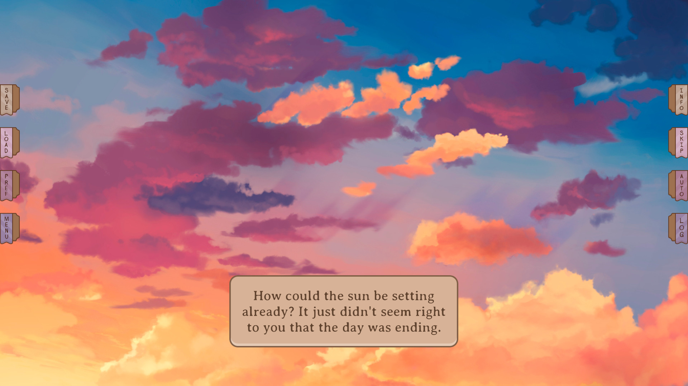

É um jogo de escolhas, uma Visual Novel moderna com várias ramificações em sua história..
MC é customizável, ou seja, há um ótimo nível de inserção do próprio jogador na narrativa, com aparência, personalidade e preferências podendo ser escolhidas.
Os personagens são interessantes e carismáticos, abordando várias etnias.
Our Life: Now & Forever se diferencia de Our Life: Beginnings and Always por possuir:
Our Life: Now and Forever não está disponível para a compra ainda, é recomendado que aqueles interessados guardem dinheiro para a futura compra.